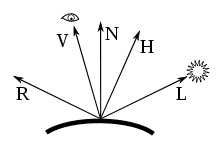
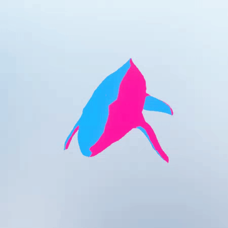
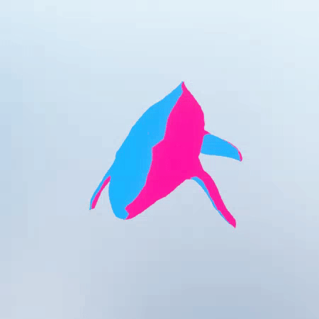
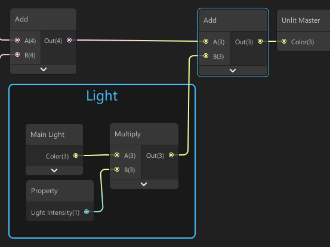
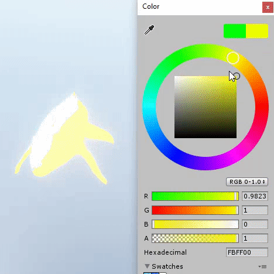
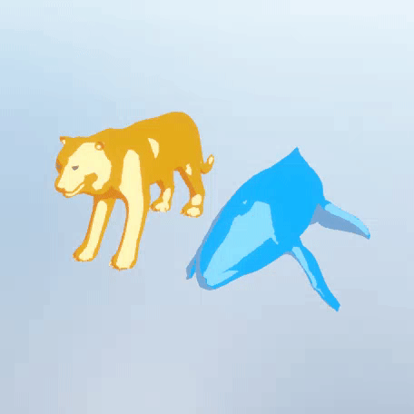
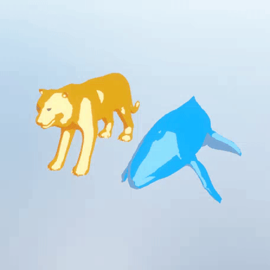
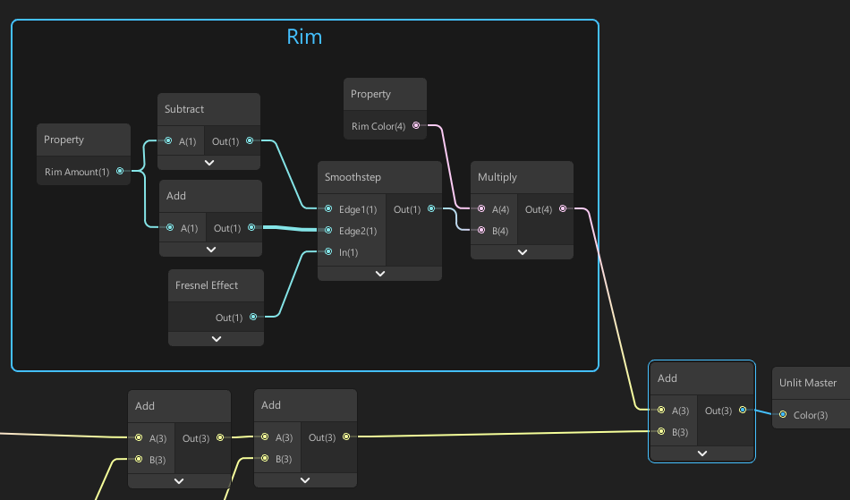
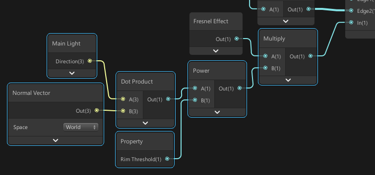

Toon Shading
Back to projects The final effect.
The final effect.
Setup
For this shader, we will be using a LWRP Unlit shader. I am using LWRP/Shadergraph version 5.10.0 in Unity 2019.1b. You also need a directional light in your scene.What Is Toon Shading?
Want to skip theory?
In a toon shader the model gets divided into 3 regions. You have dark-tone areas (unlit), mid-tone areas (lit) and highlights. The model is shaded with a flat color. Toon shading is gets its look by not using a shading gradient but harder cut-offs. A toon shader is often paired an outline shader.
 Toon shading in Houdini.
So for toon shading we want to use our own shading model instead of the default gradient-based one. We will make the edge from lit to unlit harder and for the highlights we will use the popular Blinn-Phong reflection model.
Toon shading in Houdini.
So for toon shading we want to use our own shading model instead of the default gradient-based one. We will make the edge from lit to unlit harder and for the highlights we will use the popular Blinn-Phong reflection model.
Blinn-Phong Shading Model
The Blinn-Phong shading model is a reflection model widely used in 3D graphics. I won't go into extreme detail but basically the model works like this.  Normalized vectors in the Blinn-Phong model. In classic Phong shading, the dot product of R and V is calculated. V is the vector from the surface to the player and R is the vector that represents a reflected light beam. In the Blinn-Phong model, an extra vector H is calculated which is called the 'halfway-vector'. It is called that way because it lies halfway between the vectors L and V where L is the vector that represents a light beam. This halfway vector is calculated as follows. What we do in this formula is we take the sum of the vectors V and L and we normalize the result to a
unit vector by dividing the result by its length.
What we do in this formula is we take the sum of the vectors V and L and we normalize the result to a
unit vector by dividing the result by its length.
For more useful vector algebra check this page.
Now that we calculated this extra vector H, we no longer need to calculate the dot product of R and V, but instead, we can calculate the dot product of N and H. N is the surface normal vector. This is good because this method is more performance-efficient when the camera and light are far away from the surface which if often the case. When camera (V) and light (L) are far away from eachother, their halfway vector becomes very stable since the vectors V and L are converging. Because this vector H becomes very stable, we don't have to calculate it often.
Now that we have a shading model to work with, let's get started!
Step 1: Custom Lighting Node
So, as explained in the sections above we will need several vectors. Specifically, we need the vector L (light direction), the vector N (surface normal) and the vector V (view direction). V and N are easily accessible in shader graph, but the light direction vector L is not. Right now there is no node in shader graph that supplies us with lighting data from the scene. So what do we do?... Custom nodes! Create a new custom function node. We will define 3 outputs. Direction, Color and Attenuation. Direction and Color are pretty self-explanatory. Attenuation is "the gradual loss of flux intensity through a medium". In more human language this is basically how much the intensity of the light weakens when you go further from the source. Our custom node refers to a file called MainLight.hlsl with a function named GetLightingInformation. You can create this file and put it wherever you want. You can also name it however you want, choose the extension you want and choose the function name you want.
Create the file, put it in your unity project and refer to it in the node. Open the file and put the following code in it. (Only this function, no other code!)
You can also get the code here https://pastebin.com/cP42bskG
Our custom node refers to a file called MainLight.hlsl with a function named GetLightingInformation. You can create this file and put it wherever you want. You can also name it however you want, choose the extension you want and choose the function name you want.
Create the file, put it in your unity project and refer to it in the node. Open the file and put the following code in it. (Only this function, no other code!)
You can also get the code here https://pastebin.com/cP42bskG
 We don't to anything magical here. We create the function with its outputs, create a light and access its variables. I also converted the custom function node to a subgraph name 'Main Light'.
We don't to anything magical here. We create the function with its outputs, create a light and access its variables. I also converted the custom function node to a subgraph name 'Main Light'.

Step 2: Directional Lighting And Mid Color
The first step of creating a toon shader is determining what parts of our surface will be lit/unlit. We can figure this out by comparing the direction of the light to the normal vector of the surface of our object. Here, 'comparing' means taking the dot product. When the light direction and the surface's normal vector are aligned, that means that the light is directly shining on the surface and thus that part of the surface is maximally lit. We use the following nodes. Nodes to calculate which parts of our shader will be lit/unlit.
As mentioned, we calculate the dot product of the light direction and the surface normal vector. We then feed it into a smoothstep function to make the edge between lit and unlit harder. We could use a step function for a super hard line but the smoothstep creates a smooth transition zone between lit and unlit. We make the transition zone small enough to still get the desired 'hard' effect. The smoothstep node returns a smoothed value between 0 and 1 when the input value is between Edge1 and Edge2. For Edge1 we take 0 and for Edge2 we take a very small value so that the transition zone remains small. Finally we multiply the output by a color property that will represent our 'mid tone colors' and plug it into the color slot of our master node.
These nodes give us the following result.
Nodes to calculate which parts of our shader will be lit/unlit.
As mentioned, we calculate the dot product of the light direction and the surface normal vector. We then feed it into a smoothstep function to make the edge between lit and unlit harder. We could use a step function for a super hard line but the smoothstep creates a smooth transition zone between lit and unlit. We make the transition zone small enough to still get the desired 'hard' effect. The smoothstep node returns a smoothed value between 0 and 1 when the input value is between Edge1 and Edge2. For Edge1 we take 0 and for Edge2 we take a very small value so that the transition zone remains small. Finally we multiply the output by a color property that will represent our 'mid tone colors' and plug it into the color slot of our master node.
These nodes give us the following result.
 Basic shading based on a directional light.
Basic shading based on a directional light.
Step 3: Shaded Color
Right now the unlit parts of our objects are black. Of course if this is what you want, go for it! However I want to be able to color that part separately too. We add these nodes. We add a one minus node to access the unlit part of our object and multiply by a color. Finally we add the 2 generated colors (mid and shaded) together. Now we are able to make some cool two-tone shading effects.

We add a one minus node to access the unlit part of our object and multiply by a color. Finally we add the 2 generated colors (mid and shaded) together. Now we are able to make some cool two-tone shading effects.

Step 4: Light Color
For now, our object's color is not affected by the color or intensity of the directional light. We add a few nodes to add a contribution of the directional light to the color of our object. We also add a 'Light Intensity' slider from 0 to 1 to limit the contribution from the directional light.  Now our object can be affected by the light color from the directional light. Step 5: Highlight Color
The last color-tone we want to add is of course highlights. These make the toon shader really look toonish! These highlights are like faked reflections and we can generate them by using our Blinn-Phong shading model. We implement this model as follows. As explained in the theory, we add the view direction and the light direction and normalize the result. Then we take the dot product from this halfway vector and the surface normal vector.
As explained in the theory, we add the view direction and the light direction and normalize the result. Then we take the dot product from this halfway vector and the surface normal vector.
 Next, we multiply the output of this dot product by the output of the directional lighting group. This will ensure that we only draw highlights on the lit side of the object. We also add a parameter 'Highlight Amount' to control the size of the highlight sections and we smooth the transition zone just like we did for our other color tones. Finally we multiply by a highlight color parameter and add the result at the very end of our nodes. Note that the highlight color will be added on top of the mid tone color.

Next, we multiply the output of this dot product by the output of the directional lighting group. This will ensure that we only draw highlights on the lit side of the object. We also add a parameter 'Highlight Amount' to control the size of the highlight sections and we smooth the transition zone just like we did for our other color tones. Finally we multiply by a highlight color parameter and add the result at the very end of our nodes. Note that the highlight color will be added on top of the mid tone color.

Step 6: Rim Effect
It would be nice to add an outer glow to the object. You could think of this as an extra highlight edge. This is easily done with a fresnel node.  We make fresnel effect a bit smoother again with a smoothstep node. The 'rim amount' property gets subtracted and added by 0.01 to form the 'edges' for the smoothstep node.  Next, we add some nodes to control the rim effect a bit more so that it's only visible on the lit part of our object.
What's Left?
You can add more things to this shader. Maybe a black outline would look nice? Or a brush stroke effect? Go crazy!Sources
https://en.wikipedia.org/wiki/Blinn%E2%80%93Phong_shading_model https://en.wikipedia.org/wiki/Attenuation https://roystan.net/articles/toon-shader.html http://www.sidefx.com/docs/houdini/nodes/shop/tooncolorshader.html https://connect.unity.com/p/zelda-inspired-toon-shading-in-shadergraph@alexanderameye alexanderameye@gmail.com